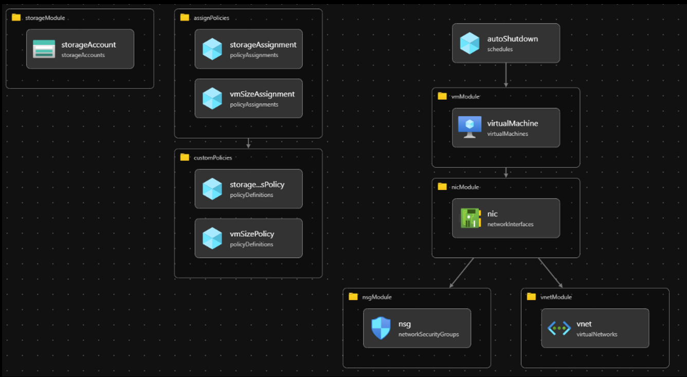
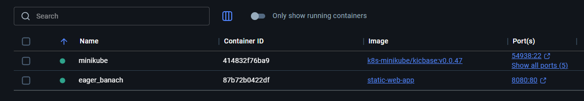
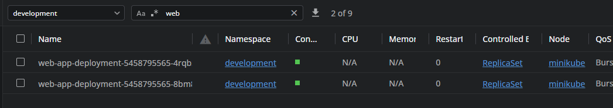

SYED MUHAMMAD HAIKAL BIN SYED HUSNI
Cloud Engineer Candidate
Software Engineering Graduate | Azure Certified | Passionate about Cloud Technologies
AZ-900
Azure Fundamentals
AZ-104
Azure Administrator
Software Engineering Graduate | Azure Certified | Passionate about Cloud Technologies
Azure Fundamentals
Azure Administrator
Deployed Azure resources using Infrastructure as Code (Bicep). Provisioned VMs, networking components, and storage accounts with parameterized templates alongside integration with Github Actions CI/CD pipeline
Containerized static website using Docker, deployed on Kubernetes minikube cluster. Created deployment.yaml files and exposed services on port 80.
Self-learned Terraform for multi-cloud Infrastructure as Code. Understanding state management and resource provisioning concepts.
Deployed Azure resources using Infrastructure as Code (Bicep). Provisioned VMs, networking components, and storage accounts with parameterized templates alongside integration with Github Actions CI/CD pipeline
Containerized static website using Docker, deployed on Kubernetes minikube cluster. Created deployment.yaml files and exposed services on port 80.
 Ready to contribute to VAT Group's cloud infrastructure journey
syedyangsebenar@gmail.com
019-5477488
linkedin.com/in/syedmuhdhaikal
github.com/syddgrt